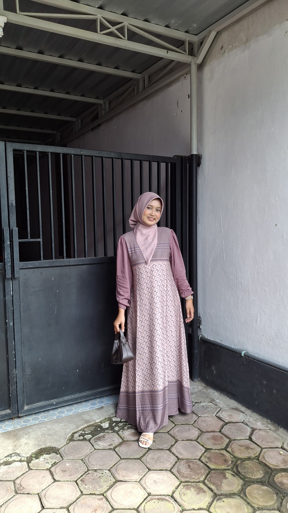

I'm Amanda — a UI/UX Designer & Web Developer based in Indonesia. I enjoy turning complex problems into clean, functional, and meaningful digital experiences.

Amanda
UI/UX & Web Developer
Featured Projects
National Certification
Internship Experience
Dedication
I'm Amanda, an Information Technology student with a deep passion for combining design aesthetics with technical execution.
I specialize in bridging the gap between user needs and business goals to create digital products that are not only visually engaging, but also highly intuitive.
From initial wireframes and user research to coding interactive web interfaces, I thrive in turning raw concepts into polished, real-world digital solutions.
I believe good design is invisible. It should simplify complexity, eliminate friction, and feel entirely natural to the user.
My approach combines user-centered thinking, visual clarity, and clean front-end code to ensure every interaction feels intentional and effortless.
Research, user flows, wireframing, high-fidelity prototyping, and crafting intuitive interfaces.
Transforming designs into responsive, fast, and fully functional modern web applications.
Building scalable design libraries, color systems, and reusable component ecosystems.
Analyzing user feedback and business requirements to deliver practical visual solutions.
Featured case studies showcasing problem-solving through design and code.
A specialized web-based tryout platform engineered for elementary students. Designed to streamline exam preparation with an engaging, distraction-free user interface.
A comprehensive UX overhaul aimed at restructuring complex data hierarchies and creating a modern, accessible interface for government platform users.
An award-winning interface concept focusing on intuitive navigation, visual hierarchy, and seamless user interaction flow.
Collaborated on redesigning municipal platforms, creating component systems, and implementing responsive layouts for optimal usability.
Led organizational communications, managed internal workflow structures, and coordinated cross-functional student teams.
Managed event planning, branding materials, and technical logistics for a university-wide tech career seminar.
Officially accredited national proficiency certifications.
Badan Nasional Sertifikasi Profesi (BNSP)
Diakui secara nasional atas kompetensi dalam merancang antarmuka pengguna, pemetaan riset pengguna, serta eksekusi standar teknis web.
Feel free to reach out if you'd like to discuss a project, collaboration, or just say hello!
Get in Touch